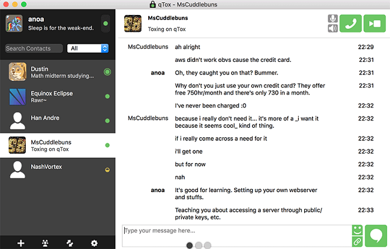
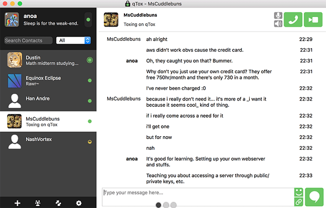
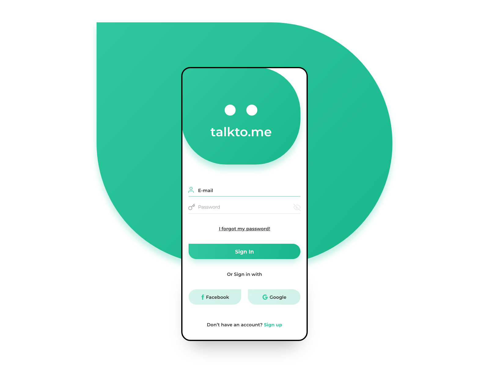

Tox.chat VS Wire


Funcionalidades de Tox.chat
En pocas palabras, Tox Chat es una nueva plataforma de mensajería instantánea . Sus características son bastante estándar cuando se trata de la industria, lo que permite a los usuarios hablar con personas en cualquier parte del mundo, configurar chats bandaales basados en temas, compartir sus pantallas y cualquier archivo, y tener conversaciones de video y voz de forma gratuita.
Capturas


Alternativas
Talkto.me
Ventajas
Tox utiliza criptografía de clave pública con perfecta discreción anterógrada para asegurar la privacidad e integridad de las comunicaciones.
Tox utiliza criptografía de clave pública con perfecta discreción anterógrada para asegurar la privacidad e integridad de las comunicaciones.
Inconvenientes
La principal preocupación de Tox es que, a pesar de ser de código abierto, su protocolo de cifrado no ha sido auditado. La dirección IP sólo es visible para las personas que usted agrega como contactos, los demás usuarios no pueden verla
La principal preocupación de Tox es que, a pesar de ser de código abierto, su protocolo de cifrado no ha sido auditado. La dirección IP sólo es visible para las personas que usted agrega como contactos, los demás usuarios no pueden verla